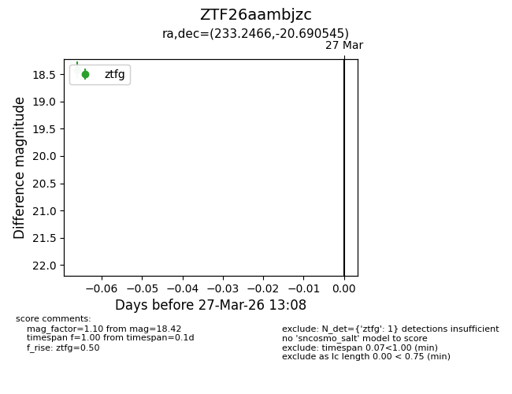
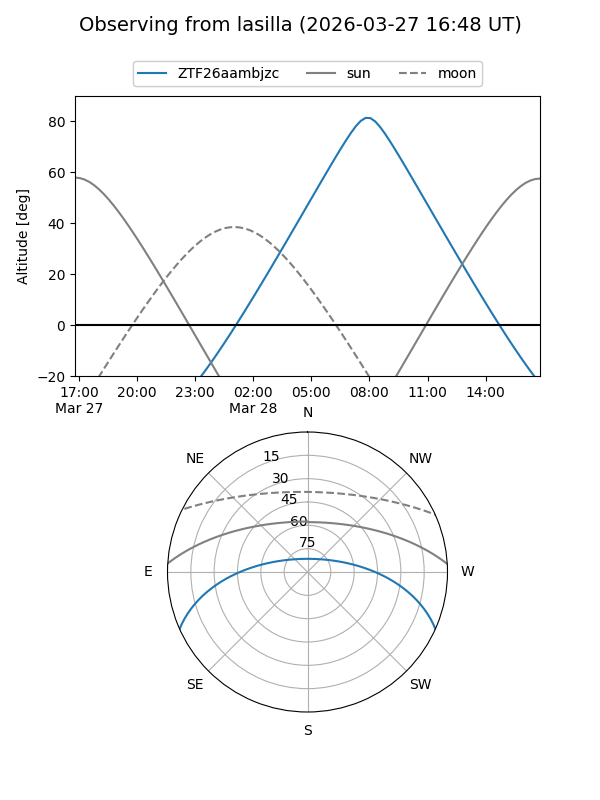
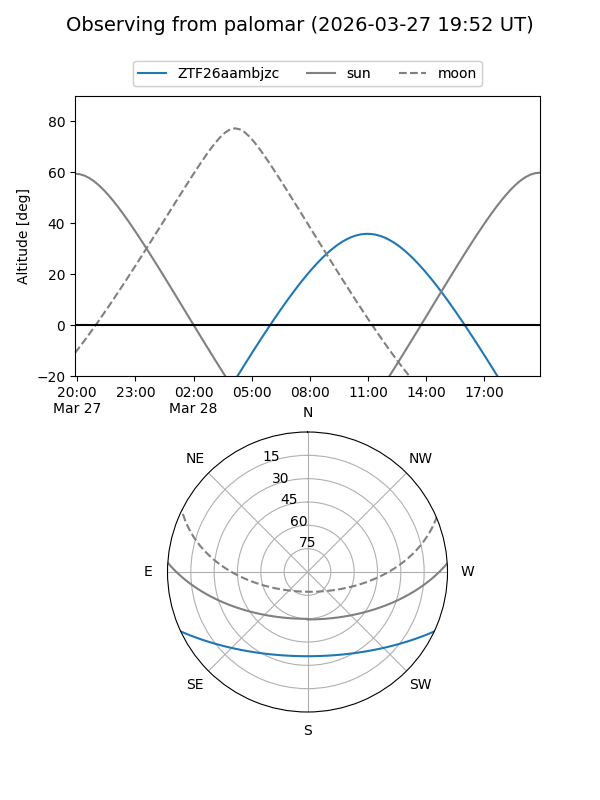

ZTF26aambjzc
Target ZTF26aambjzc at 2026-03-27 13:10
Aliases and brokers:
FINK: link
Lasair: link
ALeRCE: link
alt names
ZTF26aambjzc (ztf,fink_ztf)
Coordinates:
equatorial (ra, dec) = 233.2466,-20.69055
equatorial (HMS+DMS) = 15:32:59.19,-20:41:25.96
galactic (l, b) = (346.4047,+28.23302)
Flags:
Photometry:
last ztfg=18.42
1 ztfg detections
Lightcurve

Visibility


Additional plots